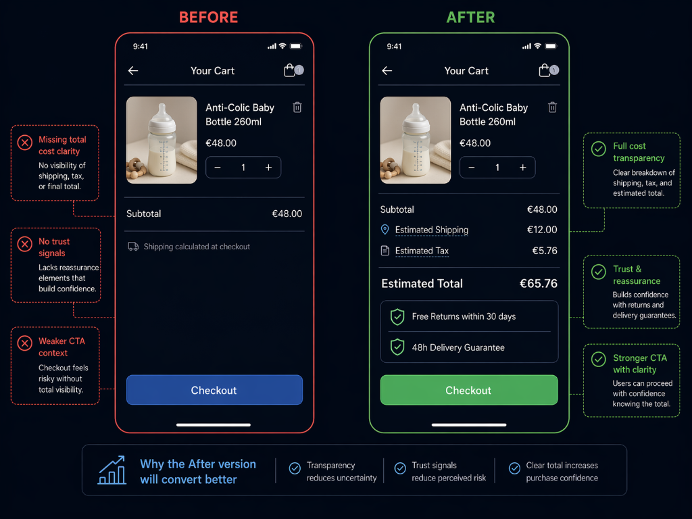

Why 88% of Mobile Traffic Was Leaving the Checkout
A European retailer in the baby and children's products category. Over 88% of sessions were mobile. Parents under time pressure — decision-made-then-execute, not browse-heavy. Desktop checkout converted acceptably. Mobile checkout was haemorrhaging — and every stakeholder's first hypothesis was "mobile checkout is just harder." It wasn't. The checkout wasn't broken. It was telling buyers new bad news at the worst possible moment.
Phase 1: The Hypothesis That Was Wrong
The team's internal explanation for the mobile checkout gap: "mobile checkout is harder for every brand." This is the default industry narrative — smaller viewport, harder typing, more friction, higher abandonment. Accept it, move on, focus on the top of the funnel.
But the data shape didn't match the "mobile is just harder" explanation. If mobile was uniformly harder, abandonment would be distributed across the checkout stages — higher at cart, higher at shipping, higher at payment. Instead, abandonment was heavily concentrated at one specific step. That's not a friction pattern. That's an event-triggered rejection.
Phase 2: Where the Drop Actually Happens
Session recording analysis on mobile checkout flows showed the repeatable pattern: buyers completing the cart, initiating checkout, entering shipping details, and then — on the shipping step — seeing the total shipping cost and tax for the first time. A significant portion abandoned immediately after that reveal.
Before — mobile checkout funnel
After — with earlier disclosure
The 75% drop at the shipping-reveal step was not friction — it was surprise. The buyer had committed to checkout without knowing the total cost. When the total materialized in the middle of the flow, they reconsidered the entire purchase. Mobile CVR: 0.85%. Desktop CVR: 0.94%. Close on paper — but on mobile that represented an enormous volume of qualified buyers getting a final surprise that pushed them out.
Phase 3: The Disclosure Timing Problem
The fix wasn't to change the price. It was to change when the buyer learned about the price. A buyer who learns the shipping cost on the product page and still chooses to check out is a committed buyer. A buyer who learns it on the shipping step is an ambushed buyer. The data is clear about how ambushed buyers behave.
What the buyer was told, and when
Phase 4: The Tests
Three coordinated interventions, all targeting the same root cause — disclosure timing.
Test 1 — Cart-page shipping and tax estimates
Estimated shipping and tax surfaced on the cart page itself, geolocated from the buyer's IP with a clear "final cost confirms at checkout" disclaimer. No change to actual pricing. Only to when the buyer learned about it.
Test 2 — Mobile navigation compression
Secondary test compressing the top navigation on mobile to preserve first-fold vertical space for the product image and primary Add-to-Cart button. Not directly checkout-related — a defensive intervention to prevent the cart disclosure from displacing the product itself.
Test 3 — Trust signal elevation in cart
Return policy and 48-hour delivery guarantee badges positioned in the cart surface, not just at checkout, to offset the anxiety introduced by showing the full cost earlier. Pairing the disclosure with reassurance — the buyer now sees €12 shipping and the return policy and the delivery guarantee on the same screen.

Before: Minimal cart showing subtotal + grey "Shipping calculated at checkout" line. No total cost visible until buyer reaches shipping step. 75% abandonment at shipping-reveal step.
After: Enhanced cart with geolocated estimated shipping (€12.00), estimated tax (€5.76), bold estimated total (€65.76). Trust badges: "Free Returns within 30 days" + "48h Delivery Guarantee." Disclosure paired with reassurance in same viewport. +9.31% revenue, €40.2K/mo incremental, ~75% reduction in shipping-step abandonment.
Phase 5: Results
The revenue lift was the headline. The ~75% reduction in checkout abandonment at the shipping-reveal step was the more important data point. It confirmed the hypothesis: the problem had never been buyer intent. It had always been a disclosure-timing problem dressed up as a conversion problem.
Tools & Stack
What This Engagement Taught Me
- Checkout abandonment is almost never about checkout. By the time the buyer reaches checkout, they've committed. Abandonment at checkout is usually a signal that upstream disclosure was incomplete. Fix the disclosure, not the checkout.
- "Mobile is just harder" is an excuse, not an explanation. If the abandonment is distributed uniformly across checkout stages, that might be friction. If it's concentrated at one specific step, that's an event-triggered rejection — and event-triggered rejections have specific fixes.
- Price transparency is not about charging less. The price didn't change. Only the timing of disclosure changed. The buyer who learns the total cost earlier and still proceeds is the buyer who was going to buy anyway — plus the buyer who would have bailed at the surprise step.
- Pair disclosure with reassurance. Showing the full cost earlier introduces anxiety. Pair it with the return policy and delivery guarantee in the same viewport so the reassurance lands at the same moment as the disclosure. Disclosure without reassurance is a different, worse test.
- Mobile-heavy categories need mobile-first checkout audits. This brand's aggregate checkout data looked OK because desktop was hiding the mobile problem. Every category with 60%+ mobile share gets a mobile-segmented checkout audit before any other test scoping.